Last updated: 2026-08-23
Checks: 7 0
Knit directory: misc/analysis/
This reproducible R Markdown analysis was created with workflowr (version 1.7.2). The Checks tab describes the reproducibility checks that were applied when the results were created. The Past versions tab lists the development history.
Great! Since the R Markdown file has been committed to the Git repository, you know the exact version of the code that produced these results.
Great job! The global environment was empty. Objects defined in the global environment can affect the analysis in your R Markdown file in unknown ways. For reproduciblity it’s best to always run the code in an empty environment.
The command set.seed(1) was run prior to running the
code in the R Markdown file. Setting a seed ensures that any results
that rely on randomness, e.g. subsampling or permutations, are
reproducible.
Great job! Recording the operating system, R version, and package versions is critical for reproducibility.
Nice! There were no cached chunks for this analysis, so you can be confident that you successfully produced the results during this run.
Great job! Using relative paths to the files within your workflowr project makes it easier to run your code on other machines.
Great! You are using Git for version control. Tracking code development and connecting the code version to the results is critical for reproducibility.
The results in this page were generated with repository version 49fea22. See the Past versions tab to see a history of the changes made to the R Markdown and HTML files.
Note that you need to be careful to ensure that all relevant files for
the analysis have been committed to Git prior to generating the results
(you can use wflow_publish or
wflow_git_commit). workflowr only checks the R Markdown
file, but you know if there are other scripts or data files that it
depends on. Below is the status of the Git repository when the results
were generated:
Ignored files:
Ignored: .DS_Store
Ignored: .Rhistory
Ignored: .Rproj.user/
Ignored: .claude/
Ignored: GSE87571/
Ignored: analysis/.RData
Ignored: analysis/.Rhistory
Ignored: analysis/ALStruct_cache/
Ignored: analysis/binary_quad_comparison_cache/
Ignored: analysis/ebproj_01.html
Ignored: analysis/gset_G63_cache/
Ignored: data/.Rhistory
Ignored: data/methylation-data-for-matthew.rds
Ignored: data/pbmc/
Ignored: data/pbmc_purified.RData
Untracked files:
Untracked: .dropbox
Untracked: GSE41037/
Untracked: Icon
Untracked: Rplots.pdf
Untracked: analysis/GHstan.Rmd
Untracked: analysis/GTEX-cogaps.Rmd
Untracked: analysis/PACS.Rmd
Untracked: analysis/Rplot.png
Untracked: analysis/SPCAvRP.rmd
Untracked: analysis/abf_comparisons.Rmd
Untracked: analysis/admm_02.Rmd
Untracked: analysis/admm_03.Rmd
Untracked: analysis/binary_quad_comparison.Rmd
Untracked: analysis/bispca.Rmd
Untracked: analysis/cache/
Untracked: analysis/cholesky.Rmd
Untracked: analysis/compare-transformed-models.Rmd
Untracked: analysis/cormotif.Rmd
Untracked: analysis/cp_ash.Rmd
Untracked: analysis/eQTL.perm.rand.pdf
Untracked: analysis/eb_power2.Rmd
Untracked: analysis/eb_prepilot.Rmd
Untracked: analysis/eb_var.Rmd
Untracked: analysis/ebpmf1.Rmd
Untracked: analysis/ebpmf_sla_text.Rmd
Untracked: analysis/ebproj_01.Rmd
Untracked: analysis/ebproj_newton.Rmd
Untracked: analysis/ebspca_sims.Rmd
Untracked: analysis/explore_psvd.Rmd
Untracked: analysis/fa_check_identify.Rmd
Untracked: analysis/fa_iterative.Rmd
Untracked: analysis/fastica_heated.Rmd
Untracked: analysis/fastica_unwhitened.Rmd
Untracked: analysis/flash_cov_overlapping_groups_init.Rmd
Untracked: analysis/flash_test_tree.Rmd
Untracked: analysis/flashier_newgroups.Rmd
Untracked: analysis/flashier_nmf_triples.Rmd
Untracked: analysis/flashier_pbmc.Rmd
Untracked: analysis/flashier_snn_shifted_prior.Rmd
Untracked: analysis/greedy_ebpmf_exploration_00.Rmd
Untracked: analysis/gset_G63.Rmd
Untracked: analysis/ieQTL.perm.rand.pdf
Untracked: analysis/lasso_em_03.Rmd
Untracked: analysis/m6amash.Rmd
Untracked: analysis/mash_bhat_z.Rmd
Untracked: analysis/mash_ieqtl_permutations.Rmd
Untracked: analysis/matrix_beta.Rmd
Untracked: analysis/meth_flash_01.Rmd
Untracked: analysis/methylation_example.Rmd
Untracked: analysis/mixsqp.Rmd
Untracked: analysis/mr.ash_lasso_init.Rmd
Untracked: analysis/mr.mash.test.Rmd
Untracked: analysis/mr_ash_modular.Rmd
Untracked: analysis/mr_ash_parameterization.Rmd
Untracked: analysis/mr_ash_ridge.Rmd
Untracked: analysis/mv_gaussian_message_passing.Rmd
Untracked: analysis/nejm.Rmd
Untracked: analysis/nmf_bg.Rmd
Untracked: analysis/nonneg_underapprox.Rmd
Untracked: analysis/normal_conditional_on_r2.Rmd
Untracked: analysis/normalize.Rmd
Untracked: analysis/pbmc.Rmd
Untracked: analysis/pca_binary_weighted.Rmd
Untracked: analysis/pca_l1.Rmd
Untracked: analysis/poisson_nmf_approx.Rmd
Untracked: analysis/poisson_shrink.Rmd
Untracked: analysis/poisson_transform.Rmd
Untracked: analysis/qrnotes.txt
Untracked: analysis/ridge_iterative_02.Rmd
Untracked: analysis/ridge_iterative_splitting.Rmd
Untracked: analysis/samps/
Untracked: analysis/sc_bimodal.Rmd
Untracked: analysis/shrinkage_comparisons_changepoints.Rmd
Untracked: analysis/susie_cov.Rmd
Untracked: analysis/susie_en.Rmd
Untracked: analysis/susie_z_investigate.Rmd
Untracked: analysis/svd-timing.Rmd
Untracked: analysis/temp.RDS
Untracked: analysis/temp.Rmd
Untracked: analysis/test-figure/
Untracked: analysis/test.Rmd
Untracked: analysis/test.Rpres
Untracked: analysis/test.md
Untracked: analysis/test_qr.R
Untracked: analysis/test_sparse.Rmd
Untracked: analysis/tree_dist_top_eigenvector.Rmd
Untracked: analysis/z.txt
Untracked: code/coordinate_descent_symNMF.R
Untracked: code/multivariate_testfuncs.R
Untracked: code/rqb.hacked.R
Untracked: data/4matthew/
Untracked: data/4matthew2/
Untracked: data/E-MTAB-2805.processed.1/
Untracked: data/ENSG00000156738.Sim_Y2.RDS
Untracked: data/G63
Untracked: data/GDS5363_full.soft.gz
Untracked: data/GSE41265_allGenesTPM.txt
Untracked: data/Muscle_Skeletal.ACTN3.pm1Mb.RDS
Untracked: data/P.rds
Untracked: data/Thyroid.FMO2.pm1Mb.RDS
Untracked: data/bmass.HaemgenRBC2016.MAF01.Vs2.MergedDataSources.200kRanSubset.ChrBPMAFMarkerZScores.vs1.txt.gz
Untracked: data/bmass.HaemgenRBC2016.Vs2.NewSNPs.ZScores.hclust.vs1.txt
Untracked: data/bmass.HaemgenRBC2016.Vs2.PreviousSNPs.ZScores.hclust.vs1.txt
Untracked: data/eb_prepilot/
Untracked: data/finemap_data/fmo2.sim/b.txt
Untracked: data/finemap_data/fmo2.sim/dap_out.txt
Untracked: data/finemap_data/fmo2.sim/dap_out2.txt
Untracked: data/finemap_data/fmo2.sim/dap_out2_snp.txt
Untracked: data/finemap_data/fmo2.sim/dap_out_snp.txt
Untracked: data/finemap_data/fmo2.sim/data
Untracked: data/finemap_data/fmo2.sim/fmo2.sim.config
Untracked: data/finemap_data/fmo2.sim/fmo2.sim.k
Untracked: data/finemap_data/fmo2.sim/fmo2.sim.k4.config
Untracked: data/finemap_data/fmo2.sim/fmo2.sim.k4.snp
Untracked: data/finemap_data/fmo2.sim/fmo2.sim.ld
Untracked: data/finemap_data/fmo2.sim/fmo2.sim.snp
Untracked: data/finemap_data/fmo2.sim/fmo2.sim.z
Untracked: data/finemap_data/fmo2.sim/pos.txt
Untracked: data/logm.csv
Untracked: data/m.cd.RDS
Untracked: data/m.cdu.old.RDS
Untracked: data/m.new.cd.RDS
Untracked: data/m.old.cd.RDS
Untracked: data/mainbib.bib.old
Untracked: data/mat.csv
Untracked: data/mat.txt
Untracked: data/mat_new.csv
Untracked: data/matrix_lik.rds
Untracked: data/paintor_data/
Untracked: data/running_data_chris.csv
Untracked: data/running_data_matthew.csv
Untracked: data/temp.txt
Untracked: data/y.txt
Untracked: data/y_f.txt
Untracked: data/zscore_jointLCLs_m6AQTLs_susie_eQTLpruned.rds
Untracked: data/zscore_jointLCLs_random.rds
Untracked: explore_udi.R
Untracked: output/fit.k10.rds
Untracked: output/fit.nn.pbmc.purified.rds
Untracked: output/fit.nn.rds
Untracked: output/fit.nn.s.001.rds
Untracked: output/fit.nn.s.01.rds
Untracked: output/fit.nn.s.1.rds
Untracked: output/fit.nn.s.10.rds
Untracked: output/fit.snn.s.001.rds
Untracked: output/fit.snn.s.01.nninit.rds
Untracked: output/fit.snn.s.01.rds
Untracked: output/fit.varbvs.RDS
Untracked: output/fit2.nn.pbmc.purified.rds
Untracked: output/glmnet.fit.RDS
Untracked: output/snn07.txt
Untracked: output/snn34.txt
Untracked: output/test.bv.txt
Untracked: output/test.gamma.txt
Untracked: output/test.hyp.txt
Untracked: output/test.log.txt
Untracked: output/test.param.txt
Untracked: output/test2.bv.txt
Untracked: output/test2.gamma.txt
Untracked: output/test2.hyp.txt
Untracked: output/test2.log.txt
Untracked: output/test2.param.txt
Untracked: output/test3.bv.txt
Untracked: output/test3.gamma.txt
Untracked: output/test3.hyp.txt
Untracked: output/test3.log.txt
Untracked: output/test3.param.txt
Untracked: output/test4.bv.txt
Untracked: output/test4.gamma.txt
Untracked: output/test4.hyp.txt
Untracked: output/test4.log.txt
Untracked: output/test4.param.txt
Untracked: output/test5.bv.txt
Untracked: output/test5.gamma.txt
Untracked: output/test5.hyp.txt
Untracked: output/test5.log.txt
Untracked: output/test5.param.txt
Unstaged changes:
Modified: .gitignore
Modified: analysis/eb_snmu.Rmd
Modified: analysis/ebnm_binormal.Rmd
Modified: analysis/ebpower.Rmd
Modified: analysis/fastica_asymmetric_03.Rmd
Modified: analysis/fastica_bm_spd.Rmd
Modified: analysis/flashier_log1p.Rmd
Modified: analysis/flashier_sla_text.Rmd
Modified: analysis/logistic_z_scores.Rmd
Modified: analysis/mr_ash_pen.Rmd
Modified: analysis/nmu_em.Rmd
Modified: analysis/susie_flash.Rmd
Modified: analysis/tap_free_energy.Rmd
Modified: misc.Rproj
Note that any generated files, e.g. HTML, png, CSS, etc., are not included in this status report because it is ok for generated content to have uncommitted changes.
These are the previous versions of the repository in which changes were
made to the R Markdown (analysis/fastica_asymmetric_04.Rmd)
and HTML (docs/fastica_asymmetric_04.html) files. If you’ve
configured a remote Git repository (see ?wflow_git_remote),
click on the hyperlinks in the table below to view the files as they
were in that past version.
| File | Version | Author | Date | Message |
|---|---|---|---|---|
| Rmd | 49fea22 | Matthew Stephens | 2026-08-23 | workflowr::wflow_publish("fastica_asymmetric_04.Rmd") |
| html | 90c580e | Matthew Stephens | 2026-08-23 | Build site. |
| Rmd | b8b08a2 | Matthew Stephens | 2026-08-23 | Add fastica_asymmetric_04: binary prior update functions and objective |
This file takes a closer look at the objective function of the
asymmetric fastICA approach from fastica_asymmetric_03.Rmd
based on asymmetric binary priors, and implements a simple Newton
optimizer that performs many starts in parallel to optimize the weights
\(w\) for a fixed prior.
The prior \(g_0\) is binary with probabilities \((1-p, p)\) and atoms \((y_0, y_1)\) chosen so that \(g_0\) has mean 0 and variance 1: \[y_1 = \sqrt{\frac{1-p}{p}}, \qquad y_0 = -\sqrt{\frac{p}{1-p}}.\] The prior \(g\) is then \(g_0\) scaled by a factor \(c\), so the effective atoms are \(cy_0\) and \(cy_1\). The default scale is \(c = c_\text{golden} = 2/(1+\sqrt{5})\) and the default residual variance is \(\sigma^2 = c\). The condition \(\sigma^2 = c\) ensures that the method is equivalent to fastICA (logcosh) when \(p=0.5\). The choice \(c=c_\text{golden}\) ensures that prior variance plus residual variance is 1 (\(c^2 + c=1\)).
When \(p = 0.5\) and \(c = \sigma^2\) the objective and updates reduce to standard fastICA (with \(g(t) = \log\cosh\)): the posterior mean becomes \(c\tanh(x)\) and the posterior derivative becomes \(c(1-\tanh^2(x))\), and the c factors have no effect under the final \(\ell_2\) normalisation.
My idea is that maybe we can get away with running this for just a few values of \(p\), rather than optimizing over \(p\) explicitly. Indeed, fastICA itself is already quite good at finding both balanced binary sources (near \(p=0.5\)) and sparse binary sources. But it finds the former as maxima over the objective and the latter as minima, which does not make it easy to compete a sparse binary source against a balanced binary source. This is potentially important because fastICA has a tendency to combine sparse binary sources into a single balanced binary source; if we had an objective function in which genuine sparse binary sources score better than combinations then this would be helpful to avoid this. When \(p\) is smaller (eg 0.1) then maybe the objective function can find both balanced and sparse sources as local maxima, with the sparse sources getting scored higher than combinations of sources? We will see…
The per-observation contribution to the objective is \[\log Z(x;\, p, c, \sigma^2) = \log\!\left[(1-p)\exp\!\left(\frac{2x\,cy_0 - (cy_0)^2}{2\sigma^2}\right) + p\exp\!\left(\frac{2x\,cy_1 - (cy_1)^2}{2\sigma^2}\right)\right]\] with \(y_1 = \sqrt{(1-p)/p}\), \(y_0 = -\sqrt{p/(1-p)}\), and the full objective is \(J(w) = \sum_i \log Z(x_i)\).
Applying the identity \(\log(e^a + e^b) = \tfrac{a+b}{2} + \log 2 + \log\cosh\!\bigl(\tfrac{b-a}{2}\bigr)\) gives a clean decomposition: \[\log Z(x;\,p,c,\sigma^2) = \gamma x + \delta + \log 2 + \log\cosh(\alpha x + \beta)\] where \[\alpha = \frac{c}{2\sigma^2\sqrt{p(1-p)}}, \quad \beta = \frac{1}{2}\log\frac{p}{1-p} - \frac{c^2(1-2p)}{4\sigma^2 p(1-p)}, \quad \gamma = (1-2p)\,\alpha.\] So the objective is log cosh of a shifted-and-scaled \(x\), plus a linear term. At \(p=0.5\): \(\alpha = c/\sigma^2\), \(\beta = \gamma = 0\), recovering \(\log\cosh(\alpha x) + \text{const}\) (standard fastICA, up to a constant).
The linear term (which enters for \(p \neq 0.5\)) might suggest that the expected objective function increases with the mean of the source (in cases where we allow a non-zero mean). However, this is not the case because it is balanced by the log cosh term (see plots later below).
c_val <- 2 / (1 + sqrt(5))
s2_val <- c_val
p_objs <- c(0.5,0.4,0.33,0.25,0.1,0.05,0.01)
cols <- palette.colors(length(p_objs), palette = "Okabe-Ito")
log_Z_vec <- function(x, p, c, s2) {
y1 <- sqrt((1 - p) / p); y0 <- -sqrt(p / (1 - p))
ey0 <- c * y0; ey1 <- c * y1
lp0 <- log(1 - p) + (2*x*ey0 - ey0^2) / (2*s2)
lp1 <- log(p) + (2*x*ey1 - ey1^2) / (2*s2)
m <- pmax(lp0, lp1)
log(exp(lp0 - m) + exp(lp1 - m)) + m
}
x_grid <- seq(-5, 5, length.out = 500)
logZ_mat <- sapply(p_objs, function(p) log_Z_vec(x_grid, p, c_val, s2_val))
matplot(x_grid, logZ_mat, type = "l", lty = 1, col = cols, lwd = 2,
xlab = "x", ylab = "log Z(x)",
main = "log Z(x) by p_objective")
legend("top", legend = paste0("p_obj = ", p_objs), col = cols, lty = 1, lwd = 2)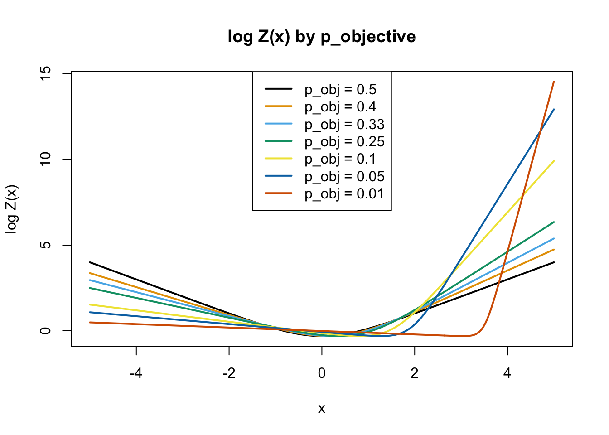
| Version | Author | Date |
|---|---|---|
| 90c580e | Matthew Stephens | 2026-08-23 |
Since we have default values for \(c,\sigma^2\) we will write the objective function \(Z\) for a given \(p=p_\text{obj}\) as \(Z(x; p_\text{obj})\).
A natural question is: what is the expected value of \(\log Z(x; p_\text{obj})\) for a binary source with weights \(p_\text{source},1-p_\text{source}\) (or \(p_\text{s},1-p_\text{s}\) for brevity). In many of our experiments we allow the source to have non-zero mean, \(\mu\), so we consider binary sources that are parameterized by \(p_\text{s}, \mu\). Since we constrain the second moment to 1, the variance is \(1 - \mu^2\), and these constraints determine the locations of the atoms, which are at \[a_0 = \mu - p_s\,d, \quad a_1 = \mu + (1-p_s)\,d, \quad d = \sqrt{\frac{1-\mu^2}{p_s(1-p_s)}}.\]
We now examine the expected value of \(\log Z(x;p_\text{obj})\) for different \(p_\text{obj}\) in a range from 0.5 to 0.05. For a binary source with mean \(\mu\) and weight \(p_\text{source}\) we can easily compute the expectation from the atoms above. We plot \(E[\log Z]\) as a function of \(\mu\) for several values of \(p_\text{source}\). A curve that peaks above its Gaussian baseline is a source detectable by this objective; how far the peak sits from \(\mu = 0\) shows how much the intercept is contributing. The behavior if we fix \(\mu=0\) is also apparent from these plots.
For \(p_o=0.5\) (fastICA), at \(\mu=0\), the sparse binary sources are below the Gaussian baseline whereas the balanced binary sources are above the Gaussian baseline. While the sparse binary source curves do go above the baseline near \(\mu=-1\), this is a rather restricted part of the space that we would probably have to deliberately search (eg by initializing the intercept near that location) to find it? (I’m not sure about this; might be worth thinking more about.) The maxima are all the same height showing that this objective function does not prefer sparse sources to balanced sources, which accords with intuition since \(p_o=0.5\).
In contrast, for \(p_o=0.25\), almost all the sources (except the vary rarest ones) are above the Gaussian baseline at \(\mu=0\) and even more so if you allow \(\mu\) to be estimated away from 0. Obviously for finding truly sparse sources it would pay to use a smaller \(p_o\), but this plot suggests that \(p_o=0.25\) might be a good general purpose choice.
By the time you go down to \(p_o=0.01\) the ability to find more common sources, even 0.1, might be quite restricted.
Based on these curves I am inclined to go with running the method for a range of \(p\) such as \(p=0.25,0.05,0.01\).
# Expected log Z for a binary source with mean mu, second moment 1
# (so variance = 1 - mu^2); atoms are mu +/- scaled y0/y1.
E_logZ_binary_shifted <- function(p_source, mu, p_obj, c, s2) {
d <- sqrt((1 - mu^2) / (p_source * (1 - p_source)))
a0 <- mu - p_source * d
a1 <- mu + (1 - p_source) * d
(1 - p_source) * log_Z_vec(a0, p_obj, c, s2) +
p_source * log_Z_vec(a1, p_obj, c, s2)
}
p_srcs_plot <- c(0.02, 0.05, 0.1, 0.2, 0.3, 0.4, 0.5)
cols_src <- palette.colors(length(p_srcs_plot), palette = "Okabe-Ito")
mu_grid_fine <- seq(-0.99, 0.99, length.out = 201)
for(p_obj_focus in p_objs){
E_vs_mu <- sapply(p_srcs_plot, function(ps)
sapply(mu_grid_fine, function(mu)
E_logZ_binary_shifted(ps, mu, p_obj_focus, c_val, s2_val)))
E_gauss_vs_mu <- sapply(mu_grid_fine, function(mu)
integrate(function(x) log_Z_vec(x, p_obj_focus, c_val, s2_val) *
dnorm(x, mu, sqrt(1 - mu^2)), -8, 8)$value)
matplot(mu_grid_fine, E_vs_mu, type = "l", lty = 1, col = cols_src, lwd = 2,
xlab = expression(mu), ylab = "E[log Z(x)]",
main = sprintf("E[log Z] vs intercept (p_obj = %.2f)", p_obj_focus))
lines(mu_grid_fine, E_gauss_vs_mu, lty = 2, col = "grey30", lwd = 2)
abline(v = 0, lty = 3, col = "grey60")
legend("bottomleft",
legend = c(paste0("p_src = ", p_srcs_plot), "Gaussian"),
col = c(cols_src, "grey30"), lty = c(rep(1, length(p_srcs_plot)), 2),
lwd = 2, cex = 0.8)
}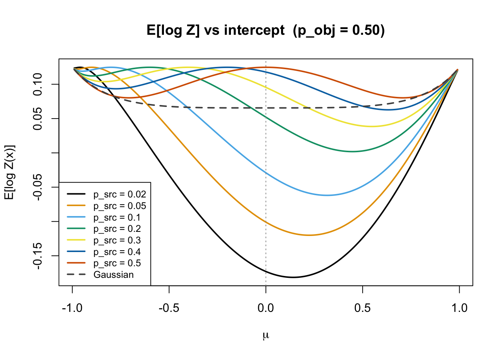
| Version | Author | Date |
|---|---|---|
| 90c580e | Matthew Stephens | 2026-08-23 |
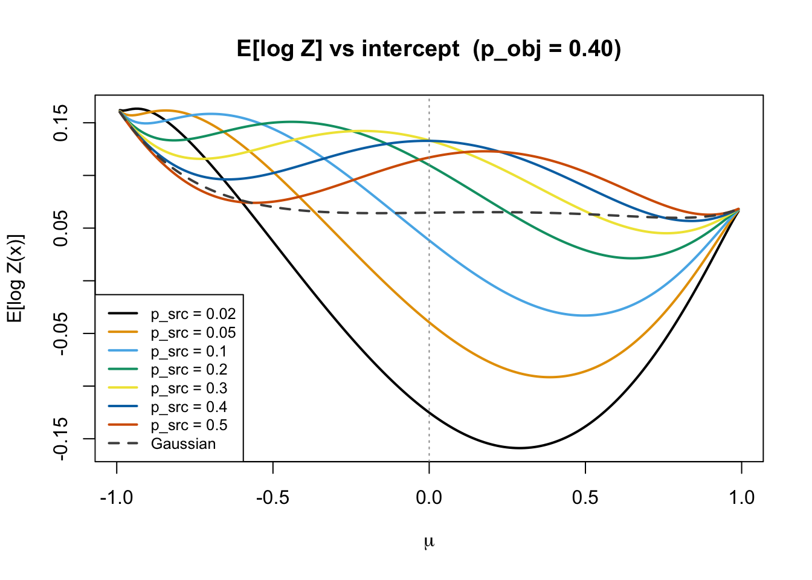
| Version | Author | Date |
|---|---|---|
| 90c580e | Matthew Stephens | 2026-08-23 |
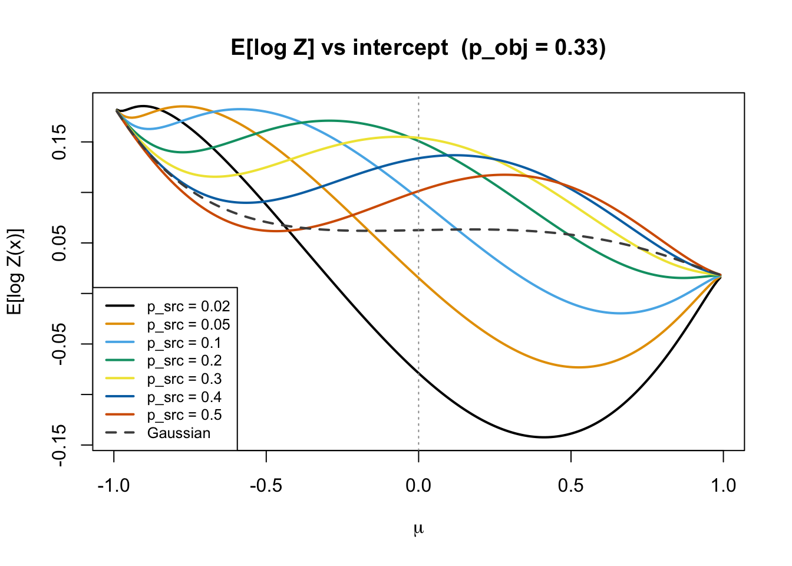
| Version | Author | Date |
|---|---|---|
| 90c580e | Matthew Stephens | 2026-08-23 |
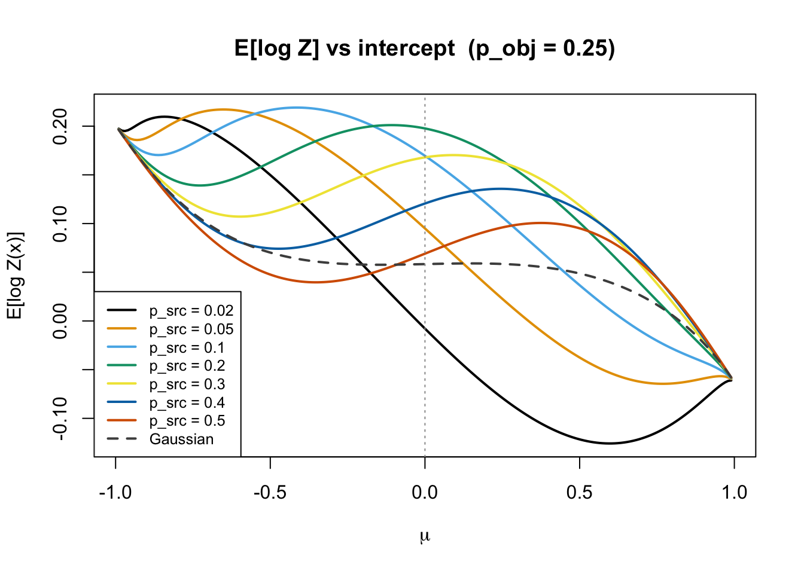
| Version | Author | Date |
|---|---|---|
| 90c580e | Matthew Stephens | 2026-08-23 |
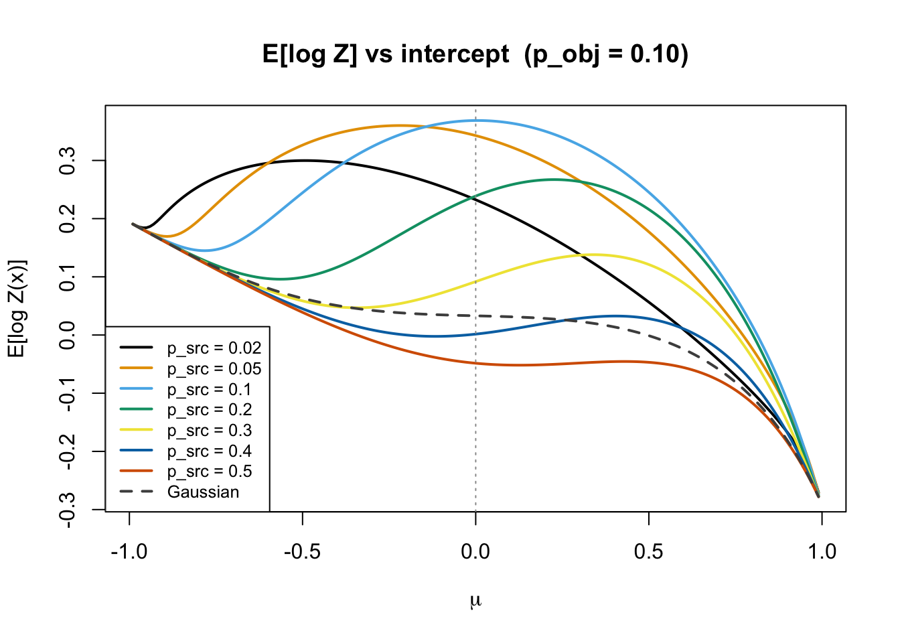
| Version | Author | Date |
|---|---|---|
| 90c580e | Matthew Stephens | 2026-08-23 |
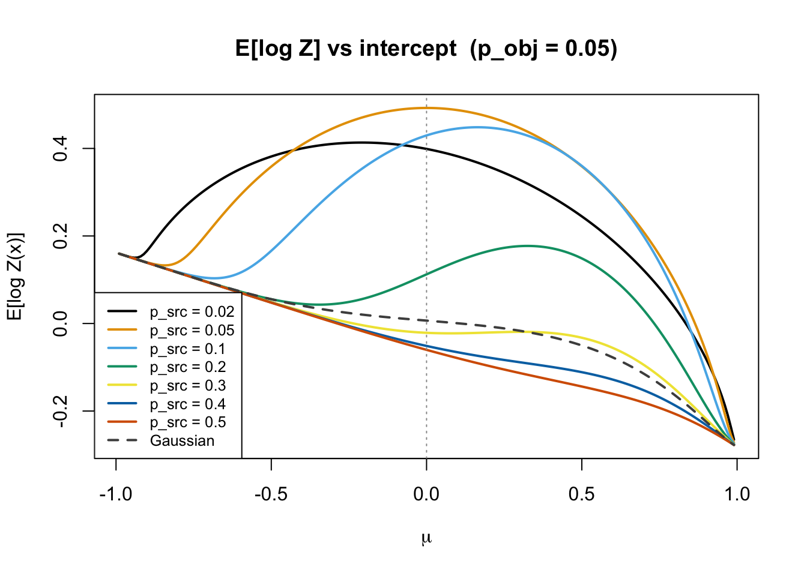
| Version | Author | Date |
|---|---|---|
| 90c580e | Matthew Stephens | 2026-08-23 |
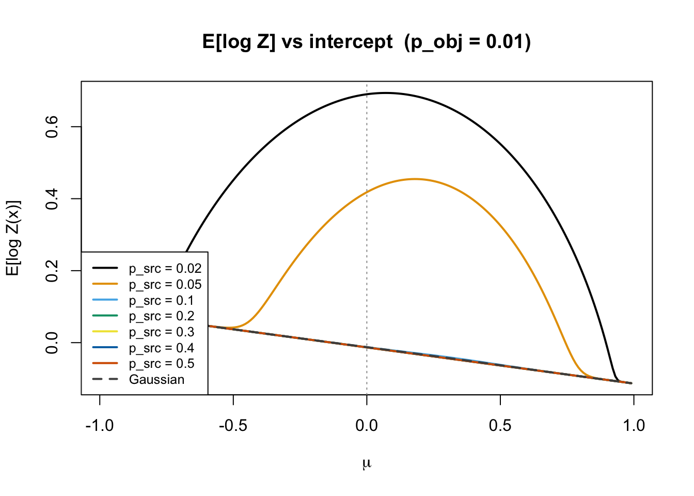
| Version | Author | Date |
|---|---|---|
| 90c580e | Matthew Stephens | 2026-08-23 |
We can also show all curves on the same plot, either by fixing \(\mu=0\) or by taking the max of each curve over \(\mu \in (-1, 1)\): \[\max_\mu\, E_{p_s,\mu}[\log Z(x)] = \max_\mu\left[(1-p_s)\log Z(a_0) + p_s\log Z(a_1)\right].\] The Gaussian baseline is similarly \(\max_\mu\, E_{N(\mu,\,1-\mu^2)}[\log Z(x)]\). The utility of showing the max is maybe limited because for many curves the max is at the degenerate solution (ie the intercept). Possibly it would be more useful to look at the location of the non-generate max? Anyway, I show this for now, but focus discussion on the plot for \(\mu=0\) (left below).
We see for \(\mu=0\) that the curve for \(p_o=0.25\) is above the Gaussian baseline for a range of \(p_s\) in about 0.2 and above. And the curve for \(p_o=0.05\) is above the baseline for many rare sources (maybe not for \(p_s\) very close to 0 though). This suggests that even fixing \(\mu=0\) and running the method for \(p_o=0.25,0.05\) might be able to find a wide range of binary sources.
# Max over mu in (-1, 1) via grid search (objective can be non-unimodal).
E_logZ_binary_maxmu <- function(p_source, p_obj, c, s2, n_grid = 201) {
mu_grid <- seq(-1 + 1e-4, 1 - 1e-4, length.out = n_grid)
max(sapply(mu_grid, function(mu)
E_logZ_binary_shifted(p_source, mu, p_obj, c, s2)))
}
# Max over mu of E[log Z] for a Gaussian with mean mu, second moment 1.
E_logZ_gauss_maxmu <- function(p_obj, c, s2, n_grid = 201) {
mu_grid <- seq(-1 + 1e-4, 1 - 1e-4, length.out = n_grid)
max(sapply(mu_grid, function(mu)
integrate(function(x) log_Z_vec(x, p_obj, c, s2) * dnorm(x, mu, sqrt(1 - mu^2)),
-8, 8)$value))
}
p_sources <- seq(0.01, 0.99, by = 0.01)
# mu = 0 (zero-mean source)
E_mat_mu0 <- sapply(p_objs, function(po)
sapply(p_sources, function(ps) E_logZ_binary_shifted(ps, 0, po, c_val, s2_val)))
E_gauss_mu0 <- sapply(p_objs, function(po)
integrate(function(x) log_Z_vec(x, po, c_val, s2_val) * dnorm(x), -8, 8)$value)
# max over mu
E_mat_maxmu <- sapply(p_objs, function(po)
sapply(p_sources, function(ps) E_logZ_binary_maxmu(ps, po, c_val, s2_val)))
E_gauss_maxmu <- sapply(p_objs, E_logZ_gauss_maxmu, c = c_val, s2 = s2_val)
par(mfrow = c(1, 2))
matplot(p_sources, E_mat_mu0, type = "l", lty = 1, col = cols, lwd = 2,
xlab = expression(p[source]), ylab = expression(E[source]*"[log Z(x)]"),
main = expression(mu == 0))
for (i in seq_along(p_objs))
abline(h = E_gauss_mu0[i], col = cols[i], lty = 2, lwd = 1.5)
legend("topright",
legend = c(paste0("p_obj = ", p_objs), "Gaussian (dashed)"),
col = c(cols, "grey50"), lty = c(rep(1, length(p_objs)), 2), lwd = 2,
cex = 0.8)
matplot(p_sources, E_mat_maxmu, type = "l", lty = 1, col = cols, lwd = 2,
xlab = expression(p[source]), ylab = "",
main = expression(max[mu]))
for (i in seq_along(p_objs))
abline(h = E_gauss_maxmu[i], col = cols[i], lty = 2, lwd = 1.5)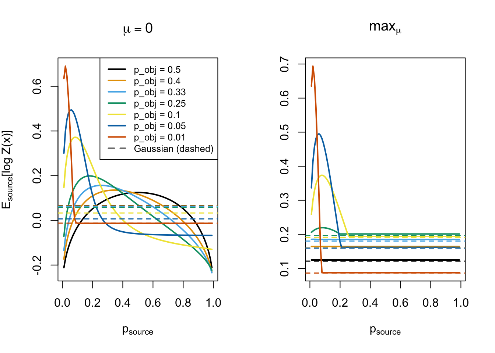
par(mfrow = c(1, 1))# Newton update (ica-hessian approximation).
# U is (n.comp) x n (whitened data).
# W is (n.comp) x n_starts (one weight vector per column).
# P = t(U) %*% W is n x n_starts (source estimates).
# When p = 0.5 and c = s2 this is identical to standard fastica_update.
binary_newton_update <- function(U, W, p = 0.5, c = 2 / (1 + sqrt(5)), s2 = c) {
y1 <- sqrt((1 - p) / p)
y0 <- -sqrt(p / (1 - p))
ey0 <- c * y0
ey1 <- c * y1
P <- t(U) %*% W # n x n_starts
lp0 <- log(1 - p) + (2*P*ey0 - ey0^2) / (2*s2)
lp1 <- log(p) + (2*P*ey1 - ey1^2) / (2*s2)
m <- pmax(lp0, lp1)
e0 <- exp(lp0 - m); e1 <- exp(lp1 - m)
pi1 <- e1 / (e0 + e1) # n x n_starts
Mx <- (1 - pi1) * ey0 + pi1 * ey1 # posterior mean
Mpx <- pi1 * (1 - pi1) * (ey1 - ey0)^2 / s2 # dM/dx
W <- U %*% Mx - sweep(W, 2, colSums(Mpx), "*")
sweep(W, 2, sqrt(colSums(W^2)) + 1e-15, "/")
}
# Gradient update (no Hessian correction; equivalent to hessian = "none" in ebproj).
binary_gradient_update <- function(U, W, p = 0.5, c = 2 / (1 + sqrt(5)), s2 = c) {
y1 <- sqrt((1 - p) / p)
y0 <- -sqrt(p / (1 - p))
ey0 <- c * y0
ey1 <- c * y1
P <- t(U) %*% W # n x n_starts
lp0 <- log(1 - p) + (2*P*ey0 - ey0^2) / (2*s2)
lp1 <- log(p) + (2*P*ey1 - ey1^2) / (2*s2)
m <- pmax(lp0, lp1)
e0 <- exp(lp0 - m); e1 <- exp(lp1 - m)
pi1 <- e1 / (e0 + e1) # n x n_starts
Mx <- (1 - pi1) * ey0 + pi1 * ey1 # posterior mean
W <- U %*% Mx
sweep(W, 2, sqrt(colSums(W^2)) + 1e-15, "/")
}
# Objective J(W) = sum_i log Z(x_i, g, s2), returned as a vector of length n_starts.
binary_objective <- function(U, W, p = 0.5, c = 2 / (1 + sqrt(5)), s2 = c) {
y1 <- sqrt((1 - p) / p)
y0 <- -sqrt(p / (1 - p))
ey0 <- c * y0
ey1 <- c * y1
P <- t(U) %*% W # n x n_starts
lp0 <- log(1 - p) + (2*P*ey0 - ey0^2) / (2*s2)
lp1 <- log(p) + (2*P*ey1 - ey1^2) / (2*s2)
m <- pmax(lp0, lp1)
colSums(log(exp(lp0 - m) + exp(lp1 - m)) + m) # length n_starts
}
# matrix version of r1 fastica
# U is (n.comp+1) x n (whitened data plus intercept).
# W is (n.comp+1) x n_starts (one weight vector per column).
# P = t(U) %*% W is n x n_starts (source estimates).
fastica_update = function(U, W) {
P <- t(U) %*% W # n x n_starts: source estimates
G <- tanh(P)
G2 <- 1 - G^2
W <- U %*% G - sweep(W, 2, colSums(G2), "*")
# Add epsilon (1e-15) to prevent 0/0
sweep(W, 2, sqrt(colSums(W^2)) + 1e-15, "/")
}Here I simulate 9 groups at random.
### $p \approx 0.2$ (20/100 active)
set.seed(1)
n = 100; p_dim = 1000; K = 9
L = matrix(0, nrow = n, ncol = K)
for (i in 1:K) L[sample(n, 20), i] = 1
FF = matrix(rnorm(p_dim * K), nrow = p_dim)
Y = L %*% t(FF) + matrix(rnorm(n * p_dim, 0, 0.1), nrow = n)I run ICA with an intercept (\(U_aug\) includes an intercept term.) I do it using both a simple fastICA code and the binary code with \(p=0.5\) just to check they give the same answer (and they do; note that the binary objective function is sum(log(cosh))+nc/2 so the axis is different but results are equivalent).
n.comp = 9
Y <- scale(Y, scale = FALSE) # center columns; also densifies for SVD
U <- sqrt(nrow(Y)) * t(svd(Y)$u[, 1:n.comp])
U_aug <- rbind(rep(1, ncol(U)), U)
n_starts = 1000
n_iter = 50
set.seed(1)
W <- matrix(rnorm(nrow(U_aug) * n_starts), nrow(U_aug), n_starts)
W <- sweep(W, 2, sqrt(colSums(W^2)), "/")
for (i in seq_len(n_iter))
W <- fastica_update(U_aug, W)
#W <- binary_newton_update(U_aug, W)
Lhat <- t(U_aug) %*% W # n x n_starts
plot(colMeans(log(cosh(Lhat))))
| Version | Author | Date |
|---|---|---|
| 90c580e | Matthew Stephens | 2026-08-23 |
set.seed(1)
W <- matrix(rnorm(nrow(U_aug) * n_starts), nrow(U_aug), n_starts)
W <- sweep(W, 2, sqrt(colSums(W^2)), "/")
for (i in seq_len(n_iter))
W <- binary_newton_update(U_aug, W)
plot(binary_objective(U_aug,W))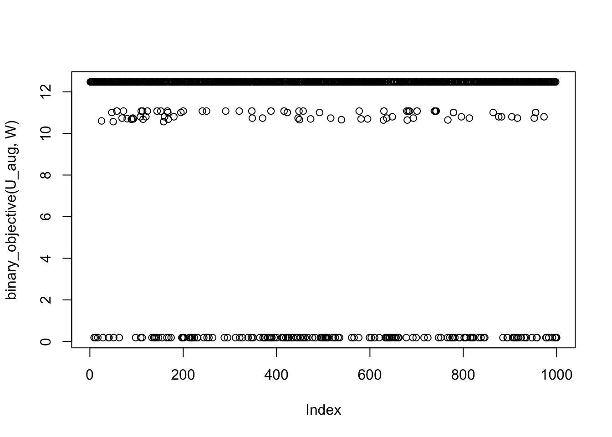
Now I try optimizing with \(p_o=0.1\). As one might hope, the maxima look like true sources. The minima look like the intercept (although numerically there is some tiny variation since the correlation is computable, and interestingly they all have the same correlation for reasons I don’t understand). Also, every one of the nine sources is found by some start.
set.seed(1)
p = 0.1
W <- matrix(rnorm(nrow(U_aug) * n_starts), nrow(U_aug), n_starts)
W <- sweep(W, 2, sqrt(colSums(W^2)), "/")
for (i in seq_len(n_iter))
W <- binary_newton_update(U_aug, W, p=p)
plot(binary_objective(U_aug,W,p=p))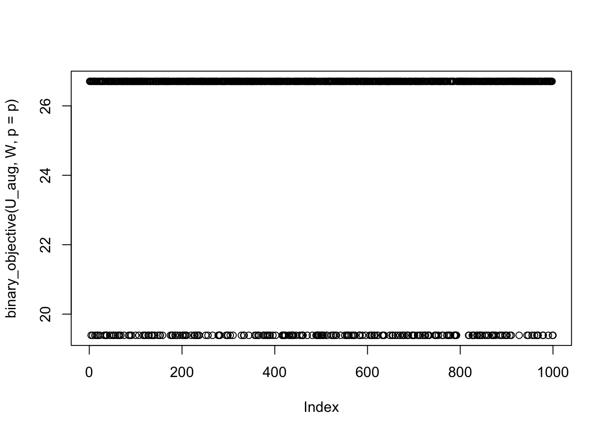
| Version | Author | Date |
|---|---|---|
| 90c580e | Matthew Stephens | 2026-08-23 |
Lhat <- t(U_aug) %*% W # n x n_starts
id_max = which.max(binary_objective(U_aug,W,p=p))
plot(Lhat[,id_max])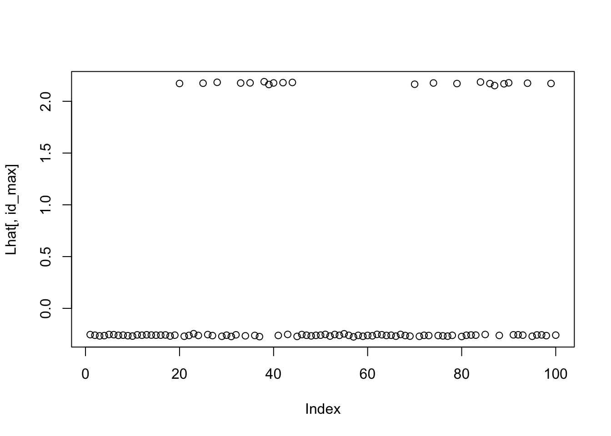
| Version | Author | Date |
|---|---|---|
| 90c580e | Matthew Stephens | 2026-08-23 |
id_min = which.min(binary_objective(U_aug,W,p=p))
plot(Lhat[,id_min])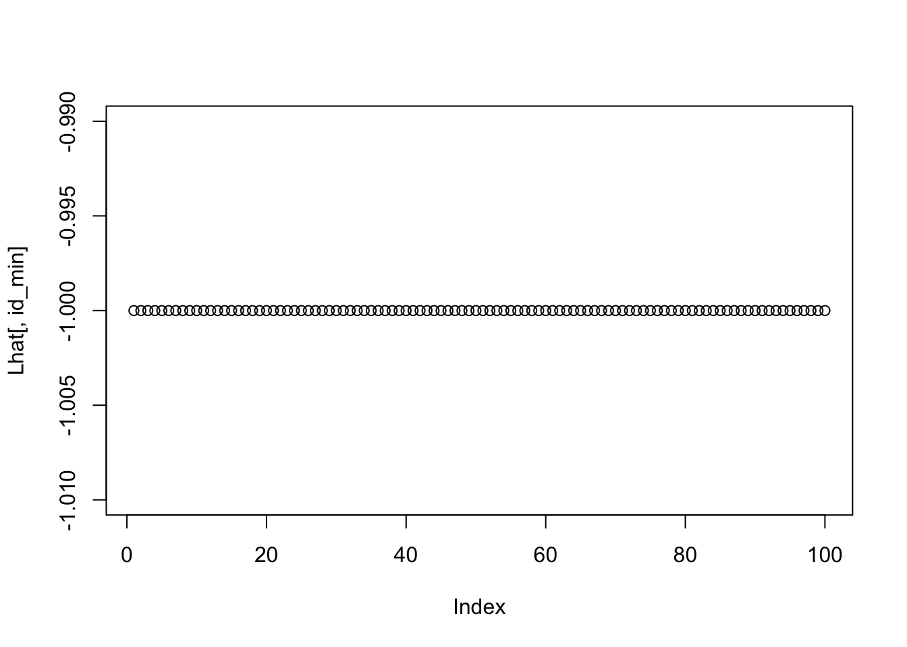
| Version | Author | Date |
|---|---|---|
| 90c580e | Matthew Stephens | 2026-08-23 |
bestcor = apply(abs(cor(Lhat,L)),1,max)
plot(bestcor, binary_objective(U_aug,W,p=p))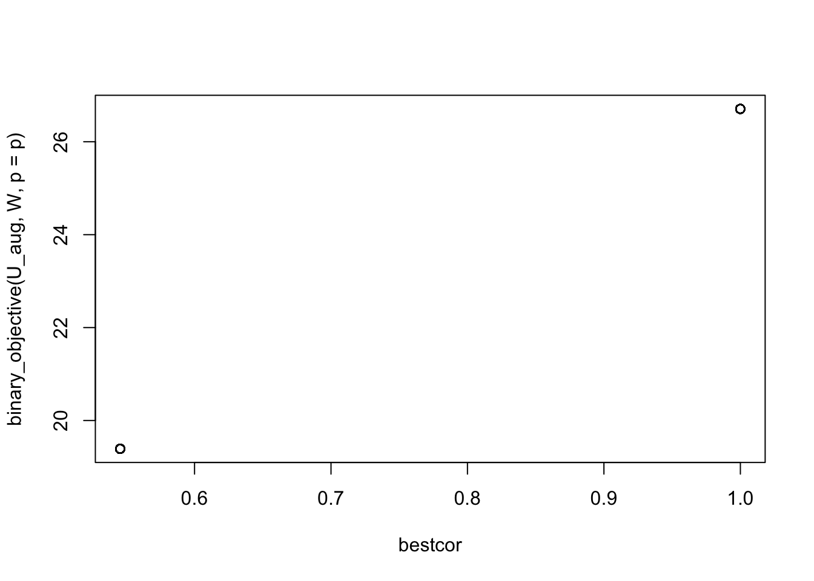
| Version | Author | Date |
|---|---|---|
| 90c580e | Matthew Stephens | 2026-08-23 |
apply(abs(cor(Lhat,L)),2,max)[1] 0.9999661 0.9999766 0.9999715 0.9999668 0.9999668 0.9999687 0.9999683
[8] 0.9999663 0.9999659Now I try \(p_o=0.25\). Something unexpected (to me) happened: the maxima are now sometimes true sources, but sometimes the intercept. If you go back to the plots of objective function for \(p_o=0.25\) you can see the degenerate solution happens to have an expected value just around the same as the maximum for \(p_s=0.2\) (actually slightly higher). So maybe I need to pay some attention to this and choose slightly different \(p_o\) than I suggested above. (This said, it does still find the true sources; but we would maybe prefer the maximum not to occur at a degenerate solution? These are easily removed though so does it matter much?)
set.seed(1)
p = 0.25
W <- matrix(rnorm(nrow(U_aug) * n_starts), nrow(U_aug), n_starts)
W <- sweep(W, 2, sqrt(colSums(W^2)), "/")
for (i in seq_len(n_iter))
W <- binary_newton_update(U_aug, W, p=p)
plot(binary_objective(U_aug,W,p=p))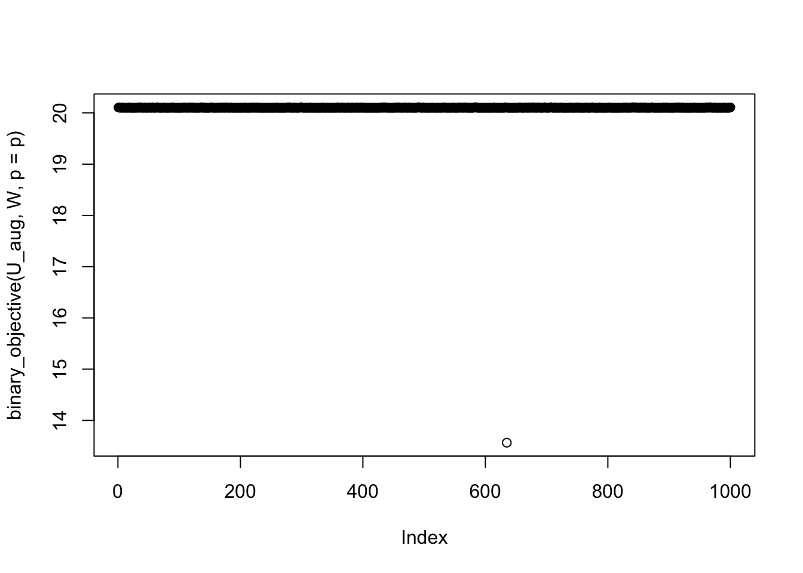
| Version | Author | Date |
|---|---|---|
| 90c580e | Matthew Stephens | 2026-08-23 |
plot(binary_objective(U_aug,W,p=p), ylim=c(20.05,20.15), main = "degenerate solution is just slightly higher")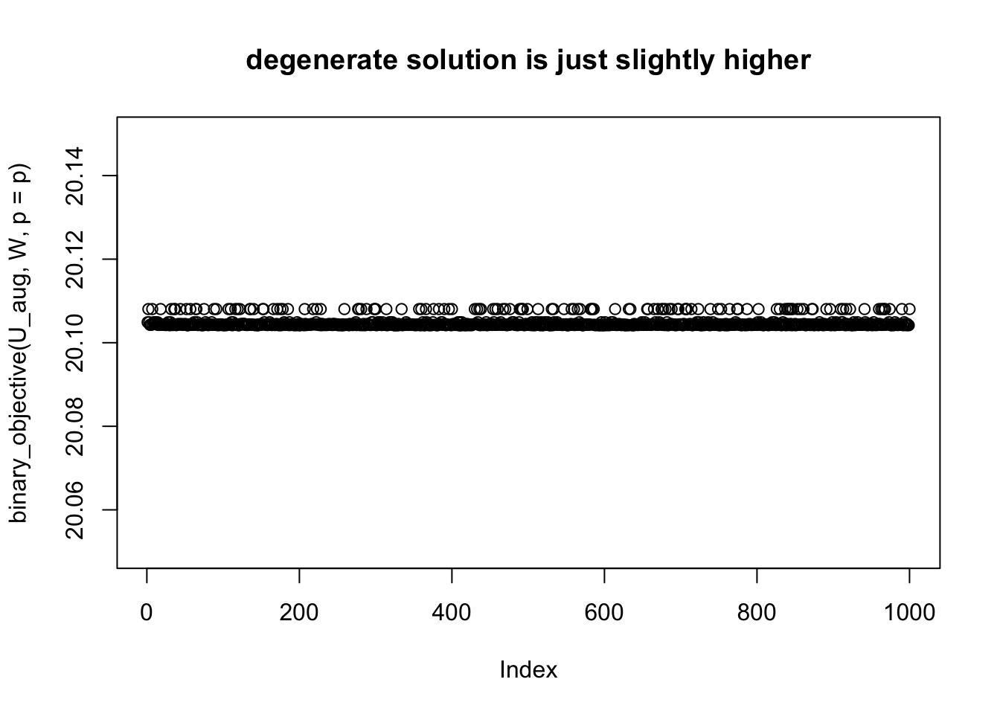
| Version | Author | Date |
|---|---|---|
| 90c580e | Matthew Stephens | 2026-08-23 |
Lhat <- t(U_aug) %*% W # n x n_starts
id_max = which.max(binary_objective(U_aug,W,p=p))
plot(Lhat[,id_max])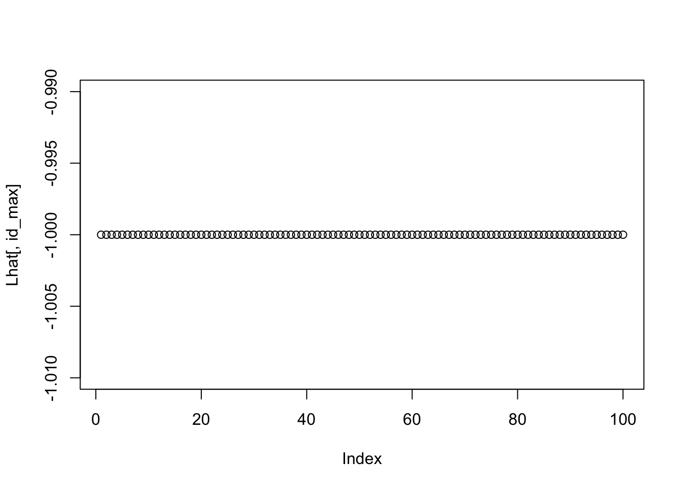
| Version | Author | Date |
|---|---|---|
| 90c580e | Matthew Stephens | 2026-08-23 |
bestcor = apply(abs(cor(Lhat,L)),1,max)
plot(bestcor,col=1+(binary_objective(U_aug,W,p=p)>20.105), main="red=degenerate solution")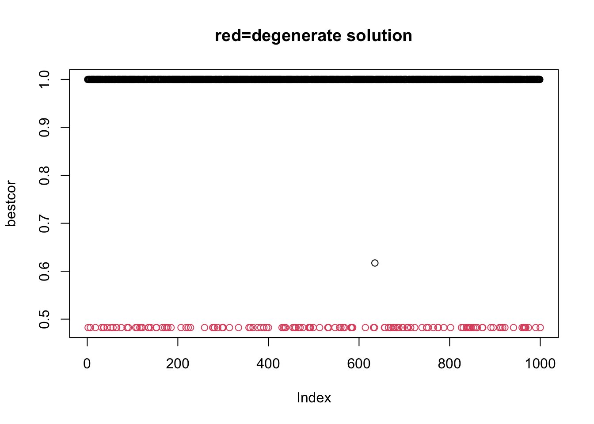
| Version | Author | Date |
|---|---|---|
| 90c580e | Matthew Stephens | 2026-08-23 |
apply(abs(cor(Lhat,L)),2,max)[1] 0.9999664 0.9999770 0.9999716 0.9999671 0.9999671 0.9999691 0.9999685
[8] 0.9999665 0.9999663
sessionInfo()R version 4.4.2 (2024-10-31)
Platform: aarch64-apple-darwin20
Running under: macOS 26.5.2
Matrix products: default
BLAS: /System/Library/Frameworks/Accelerate.framework/Versions/A/Frameworks/vecLib.framework/Versions/A/libBLAS.dylib
LAPACK: /Library/Frameworks/R.framework/Versions/4.4-arm64/Resources/lib/libRlapack.dylib; LAPACK version 3.12.0
locale:
[1] en_US.UTF-8/en_US.UTF-8/en_US.UTF-8/C/en_US.UTF-8/en_US.UTF-8
time zone: America/Chicago
tzcode source: internal
attached base packages:
[1] stats graphics grDevices utils datasets methods base
loaded via a namespace (and not attached):
[1] vctrs_0.7.2 cli_3.6.5 knitr_1.51 rlang_1.1.7
[5] xfun_0.56 stringi_1.8.7 otel_0.2.0 promises_1.5.0
[9] jsonlite_2.0.0 workflowr_1.7.2 glue_1.8.0 rprojroot_2.1.1
[13] git2r_0.36.2 htmltools_0.5.9 httpuv_1.6.16 sass_0.4.10
[17] rmarkdown_2.30 jquerylib_0.1.4 evaluate_1.0.5 tibble_3.3.1
[21] fastmap_1.2.0 yaml_2.3.12 lifecycle_1.0.5 whisker_0.4.1
[25] stringr_1.6.0 compiler_4.4.2 fs_1.6.6 Rcpp_1.1.1
[29] pkgconfig_2.0.3 rstudioapi_0.18.0 later_1.4.6 digest_0.6.39
[33] R6_2.6.1 pillar_1.11.1 magrittr_2.0.4 bslib_0.10.0
[37] tools_4.4.2 cachem_1.1.0